Keynote
Keynote Sketching
SketchingOverview
Design brief
Increase awareness of Conflict minerals and give credence to ‘Conflict-Free Electronics (CFE)’ to approach large consumer electronics companies
The challenges
- We had to articulate and solve an User Experience problem for awareness. Client education on UX design was important to set the right expectations
- Electronics purchasing behaviors appear to be difficult to change based on belief systems
- Creating a sensible call-to-action after creating awareness
- Making the campaign personal and educating the user while keeping engagement high
- 2 and a half week project
The insights
- Websites of most awareness campaigns focus on the problems the campaign is addressing, and don’t sufficiently celebrate the victories the movements have in their efforts to combat the problems
- We used the power of viewing the campaign on an electronic device which itself is the source of the problem, thereby making the campaign very personal
- Call-to-action was created in the form of a petition to find out if the user’s devices are conflict-free, thereby providing our client with powerful petitions to take to large electronics companies
Our solutions
- A campaign website primarily for education and mobile app primarily for awareness & call-to-action
- Mobile app using the power of the device by educating the user on how the device in their hands contains metals that cause conflict
- Increase potential for virality of the app by including cool interactions such as looking at the electronic components inside your phone model (customized for each model)
- A website that gives equal priority to explaining the negative events as well as positive events around the fight against conflict-minerals
- Petition system that asks for the ID of the user’s device and links it to their petition. This would give CFE a bunch of petitions to take to the respective manufacturer of the device and ask them to work towards making their supply chain conflict-free
Team
I worked with Le-Marie Thompson of CFE and Suleiman, at General Assembly. We also benefited from inputs by Faz. My key contributions were in Research, Ideation, Mobile App Prototyping and Delivery.
Discovery
Understanding the world of Conflict Electronics
CLIENT INTERVIEWS
We interacted with the client and understood the contours of the problem that we were to solve through UX Design.
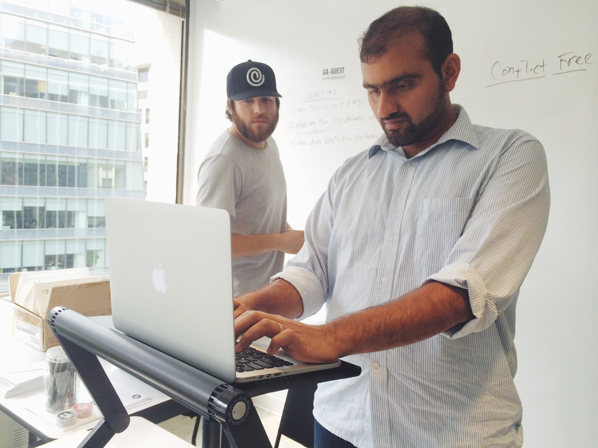We delved into the world of conflict minerals and understood the complex issues at hand as well as the regulatory efforts that have been attempted at curtailing the problem. We also understood from Le-Marie about what role CFE, as an organization, would like to play in the fight against conflict minerals.
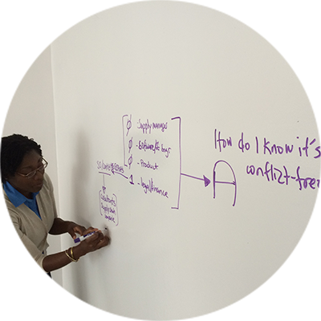
It was personally saddening for me to hear about the extent of the problem and the lack of significant change on the ground to eradicate it. It also opened my eyes to the complexity of electronics supply chain which made it very difficult to actually know if a given device is conflict-free. The need to get large companies to pay more attention became more apparent. And the way forward was to get their customers to ask for the change.
It was heartening to know that the US government has legislation that mandates companies to source conflict free minerals and that EU is also soon coming up with regulation to enforce the same. In spite of this, electronics companies are not putting in the effort required to declare themselves conflict-free.
This video was a powerful eye-opener into the world of Conflict Minerals
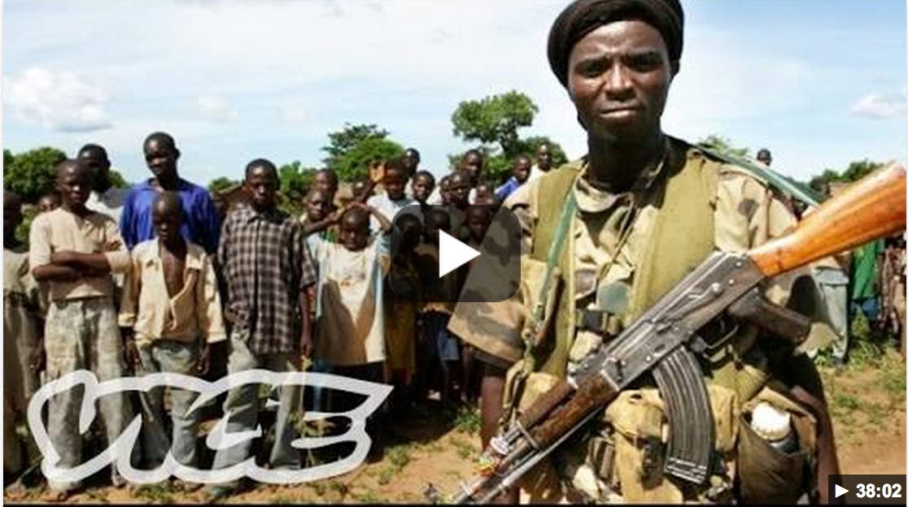How have other movements increased awareness?
COMPETITIVE ANALYSIS
We looked at different organizations such as World Food Program, WWF, Open Society and Fair Trade. Depending on the scale of the organization and the tone of the movement, the websites had varying levels of content and live updates.
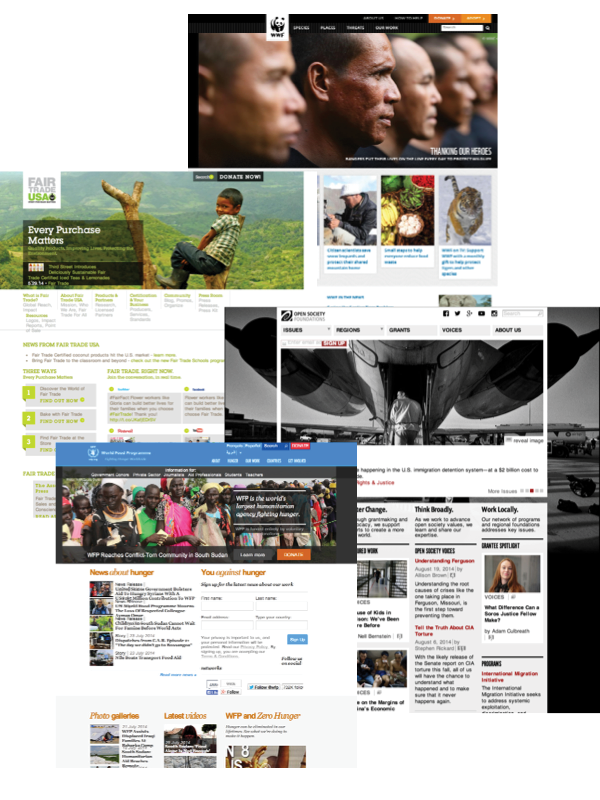{kind=link}
Overall we found the following themes:
- Donate button was given most prominence
- All websites had a main top placeholder which described the cause the organization was fighting for
- Focus was primarily on the issues around the cause and not much on the successes the organization has had
- Most of the websites didn’t provide much focus on updates from the field
- They were all media heavy to make their site more interesting and provide context about their cause through rich content like images and videos
Recently, there have been instances of movements using an App to interact with the user in a much more engaging manner. A great example of this is the award-winning WWF app that through great device interactions, made it ‘cool’ to learn about wildlife.
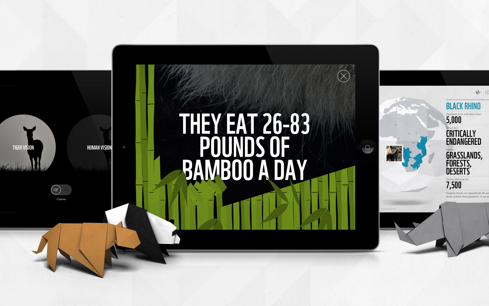How do people inform their beliefs and act on it?
User research
We prepared a discussion guide to understand how people decide to buy stuff based on what they believe in. We had in-depth interviews with multiple people to understand people’s buying behavior.
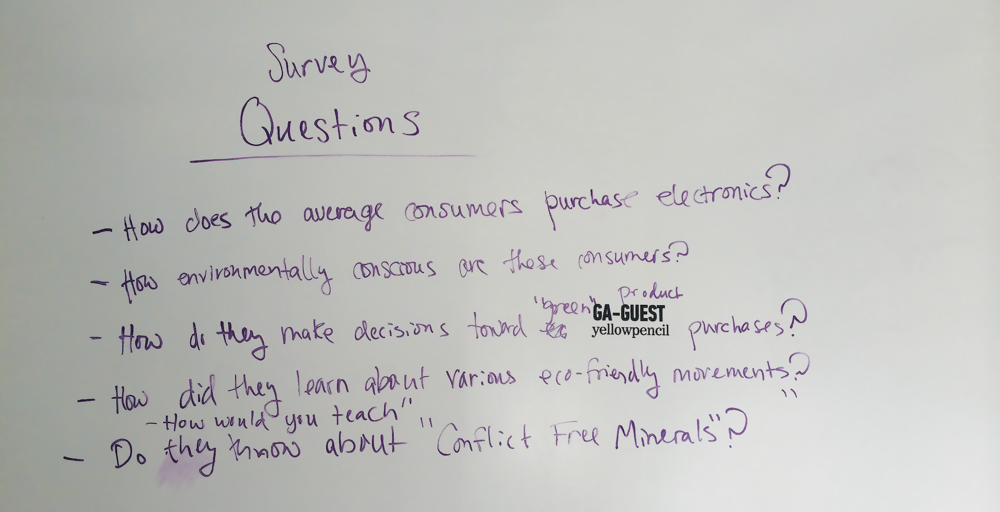We put up the results of these interviews on a post-it board.
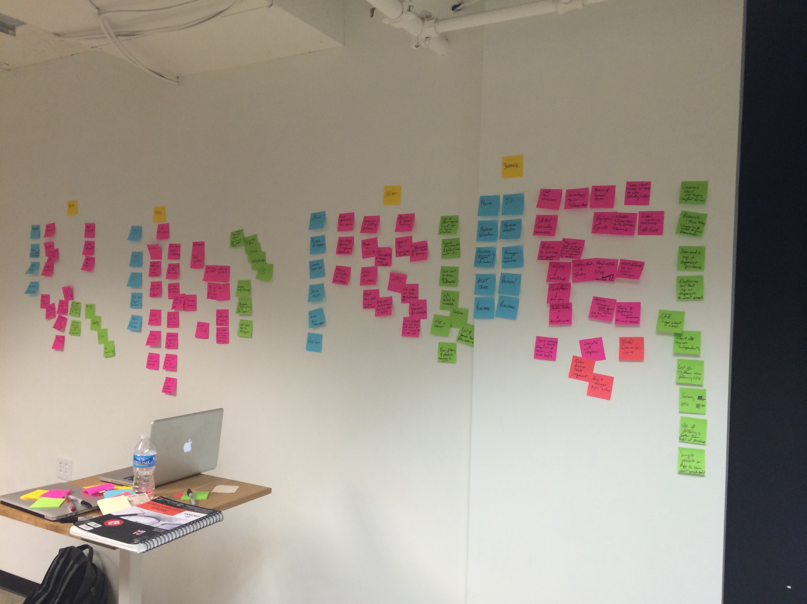Looking for patterns
Affinity Mapping
While going through our interview responses, we tried to glean patterns from all the responses. Using affinity mapping, we were able to articulate the retail behaviors and belief systems of people in a better way.
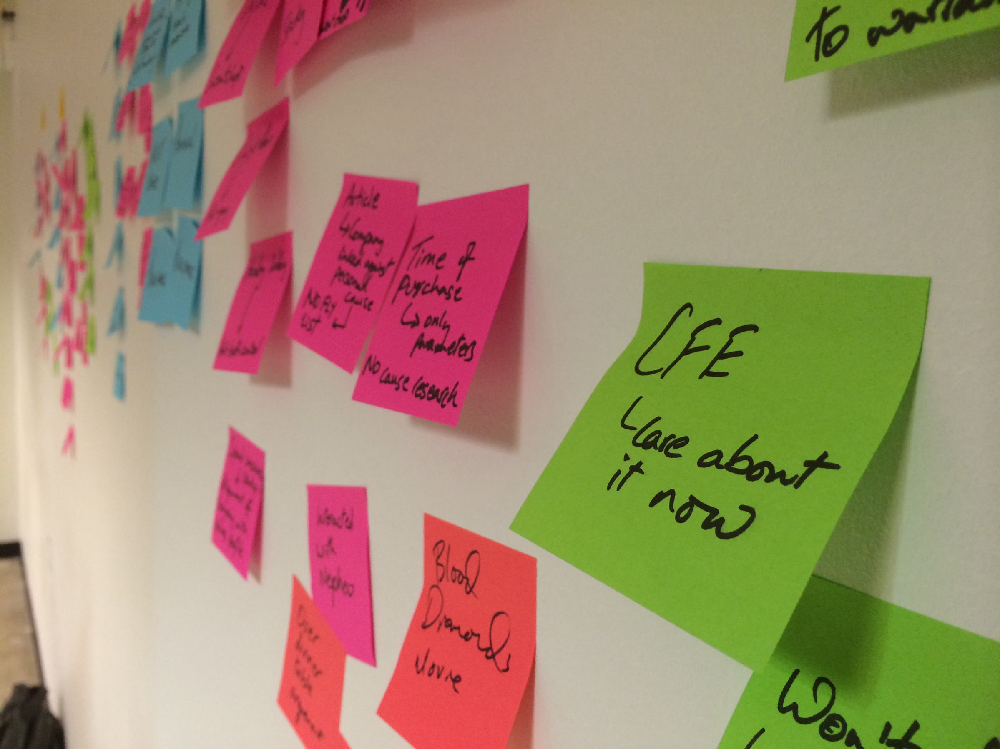 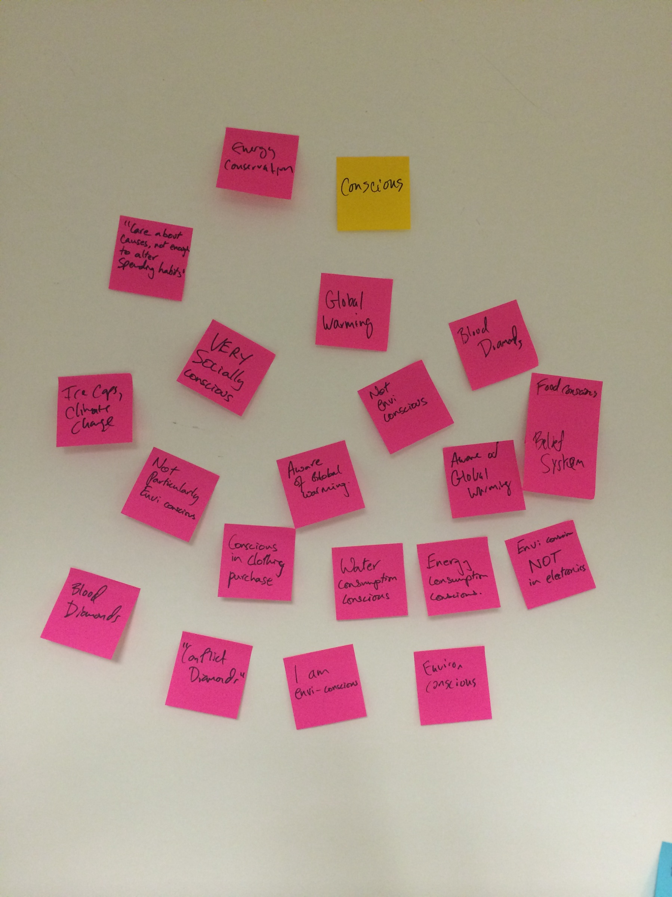 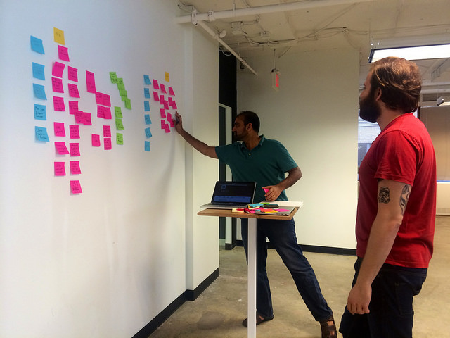Insights from the Discovery phase
- Electronics is purchased once a year and has high cost for that one purchase. Therefore, everyone is trying to extract maximum value for the money they spend.
- Most people we met with had one or two social movements (like recycling, organic food, global warming etc) they believed in and made sure they kept themselves updated on news from those movements.
- People were always noticed any news or blogs that linked a certain company either for or against their belief. For eg. one of our respondents refused to buy from a company because the company owners were against sexual equality.
- People seemed to get their information consistently from popular media sources such as Twitter, Facebook, Blogs or News. Celebrity endorsements and rigorous evidence seemed to be the main two powerful ways to make people decide to buy based on their beliefs
- Everyone unanimously said they would like a clear database which specify which devices are conflict free and which aren’t. Their preference would be get this information at the time of searching for which device to buy
Ideation
What have we understood?
Mind Mapping
We sliced all the information we had using different approaches. We put all the information up on the whiteboard and then tried to find patterns in it. We tried multiple approaches so as to spot opportunities to create an user experience that would have the most impact.
We looked at the entire set of stakeholders to see if creating a link between the victims, miners and the consumers would be powerful. Or if it made sense to connect the victims to the electronics companies. As expected the most powerful connection was between the end-consumer and the electronics company. Any change in this relationship would resonate across the supply chain.
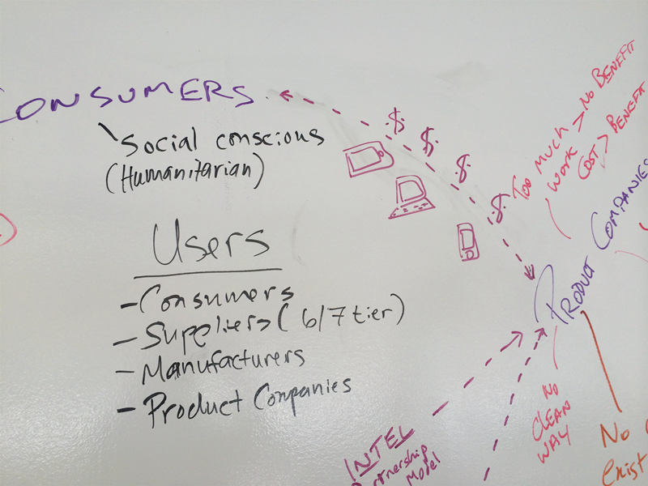We tried to understand the Cost and Benefits for the large electronics companies to become conflict-free. The effect a conflict-free electronics campaign would have on the company’s brand value appeared to be the biggest leverage point. It also seemed that obtaining reliable information whether a device is conflict-free seemed to be the biggest cost barrier for a company to declare themselves conflict-free.
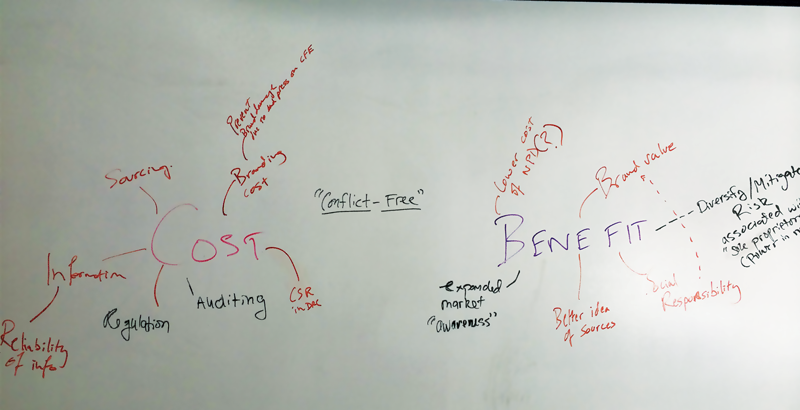A checklist, instead of personas
User requirements
While we were toying with the idea of creating personas, we realized that the campaign was not mature enough to tailor their message and user experience to different personas. Therefore we created a checklist of user requirements that we would have to make sure we address while designing the campaign. The checklist largely was around three parts:
- Rational side of cause and effect of conflict-minerals
- Emotional side of personal stories that convey the pain caused by conflict minerals
- A clear answer to a question every user would have: ‘What can I do about this?’
How should we make design decisions?
SOLUTION FRAMEWORK
We developed a solution framework to inform the user experience the campaign would offer
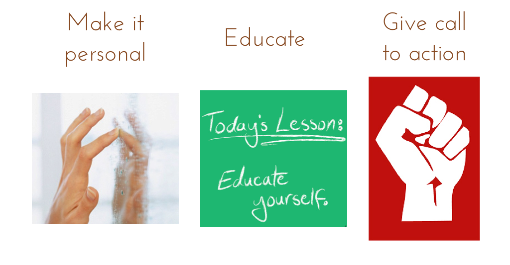Make it personal
- Current conflict electronics awareness campaigns are not personal enough
- Use the power of story-telling on the device in in each consumer’s hands
- Appeal to the electronics lovers by creating something cool, and also meaningful
Educate
- Awareness campaigns across the board highlight the problem a lot, not improvements
- Show how far the fight has been won and other progress out there
- Have healthy balance of Problems and Progress
Call-to-action
- Every campaign needs to provide a clear and useful call to action
- Most campaigns only have a donate or ‘share on social media’ actions
- CFE can use the power of petitioning on electronics devices to make a personal petition
- Petition system could also make it easier for CFE to engage companies
What do we build?
FEATURE PRIORITIZATION
We decided that we would need both a responsive web platform and a mobile app. We clearly articulated the focus for each of the two as well as how they would come together to form the overall CFE experience.
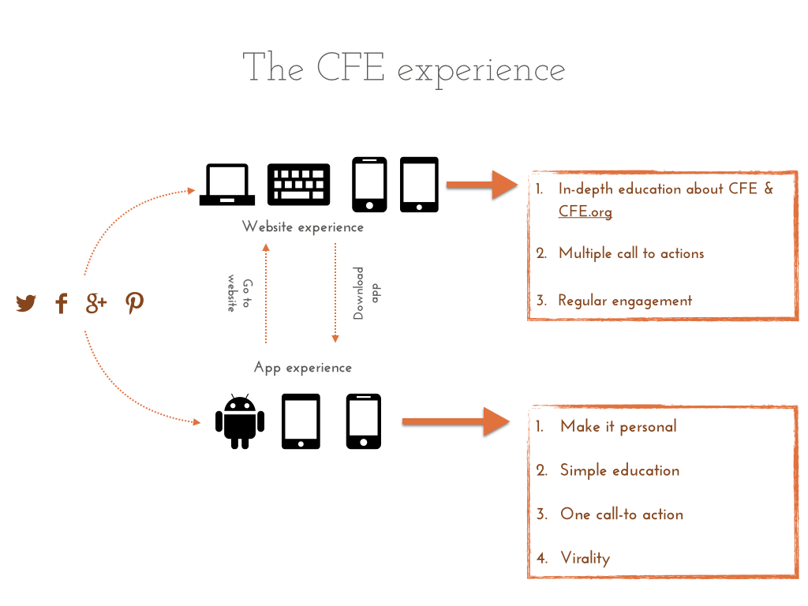Not 'You Vs Me', only 'Us vs The problem'
To increase our productivity as a team, we used the Design Studio method to sketch out our ideas around the task of transferring money. Over many iterations, each one of us sketched our ideas out and critiqued each other’s sketches.
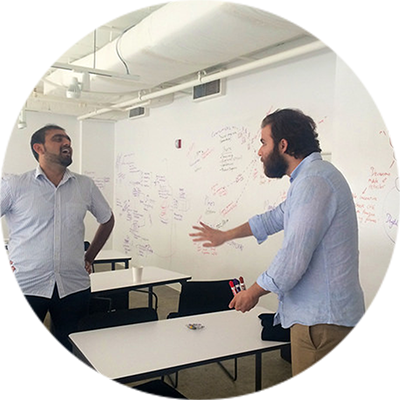In a short period of time, we were able to create multiple app wireframes of the internal wire transfer task. This method also gave us insight into the duplication of user decisions when you look at internal transfers as a separate flow from external transfers.
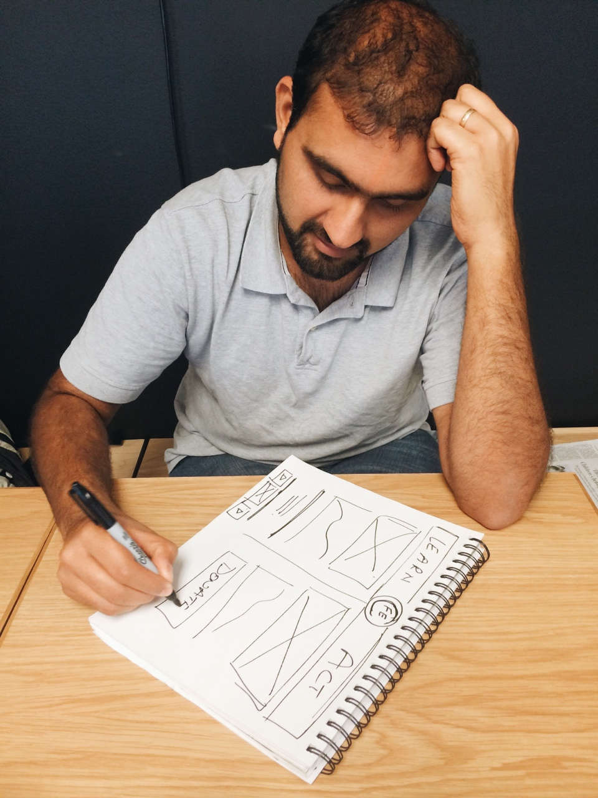 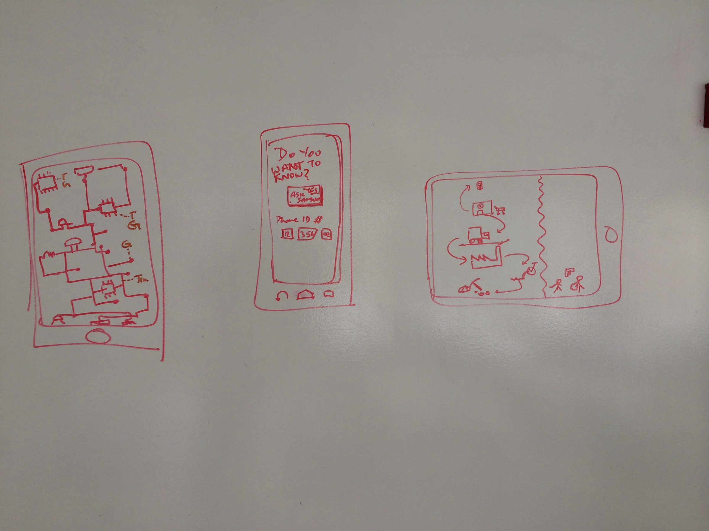 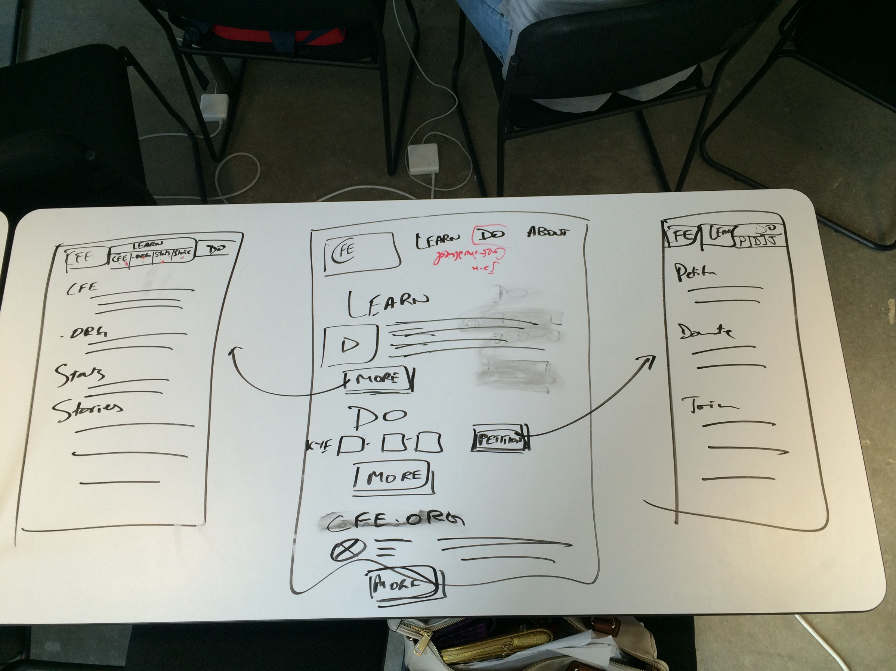 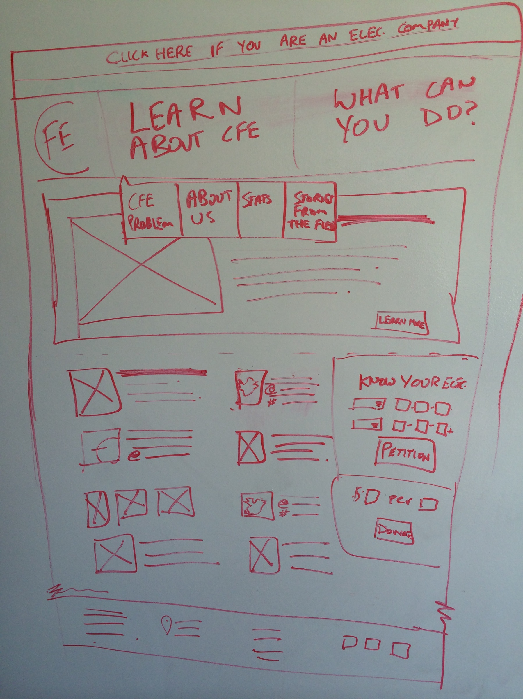Prototyping
What prototype tool works best?
CHOOSING PROTOTYPING TOOLS
While creating prototypes for this project, we wanted to explore different prototyping tools.
For the website, after trying Webflow, we decided to use UXPin to explore the power to creating clickable wireframes and higher fidelity clickable mock-ups on the same platform from start to finish. UXPin also gave us the ability to create responsive clickable prototypes.
For the mobile app, we struggled to simulate great interaction design on the phone. While a photo-gallery worked for the low-fidelity prototype, it didn’t work when we wanted to put in more interactions. Keynote worked great to show the interactive prototype on the laptop screen, but did not work well when we tried to use it on the phone. We therefore did our user testing using the Keynote prototype on the laptop.
Let’s test it out!
USER TESTING
We created clickable wireframe of the website on UXPin to test it out.
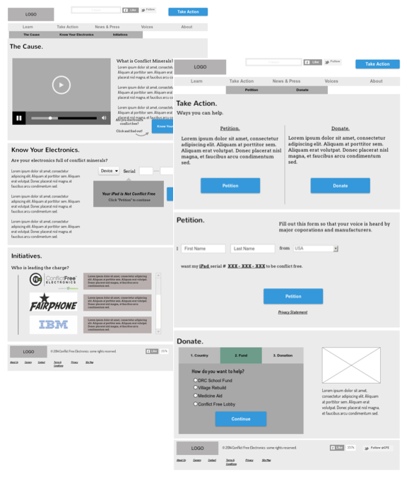We gleaned some insights from our testing:
- The zoning of different information needed to be clearer
- Users wanted to see more content on the home page than needing to dig deeper
For the App, we first created the prototype on the photo gallery. After testing it out, we created an app prototype on Keynote to simulate a simple story of taking a selfie, seeing the electronics inside that makes it possible, identifying a specific electronic component which normally has conflict minerals.
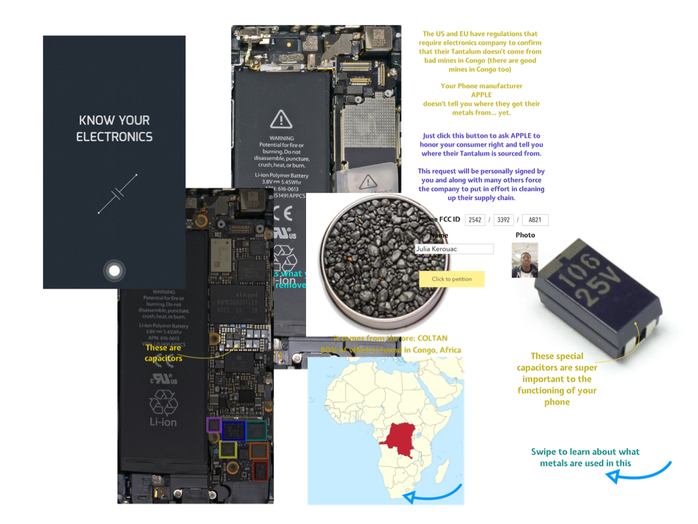We learnt that:
- Users immediately related to the concept of showing the electronics inside their own device
- A little more context on what the type of organization CFE is needed before the app story starts
- The part of getting device details to create a petition needs to be better managed to assure the user of their privacy
Delivery
The final mockups were created keeping in mind the different inputs and feedback we got from testing our wireframes and prototypes.
The A-B-Cs of the CFE visual language
PRELIMINARY STYLE GUIDE
We created a style guide to give the visual designer a sense of recommended colors, typeface and styles. This was only an starting point and we recommended CFE should undertake a detailed development of visual language.
The color palette incorporated the white & gray of electronic components and the brown & green representing the mining in lush green Congo. The Exo typeface for the mobile app was a very geometric font invoking the classic digital fonts. The Arvo and Dosis typefaces were recommended for the websites as modern fonts which were very versatile and worked well with each other.
The navigation buttons on the website were laid out flat with a clear highlight color for hover and active states. The call-to-action button was given a contrast color and designed as a raised button.
Moment of reckoning
CLIENT PRESENTATION
Although we had kept in continuous contact with our client, on the day of the presentation, we gave CFE our detailed presentation along with our final recommendations. We were quite thrilled when CFE decided to implement our recommendations to the fullest and decided to seek a round of funding to do so.
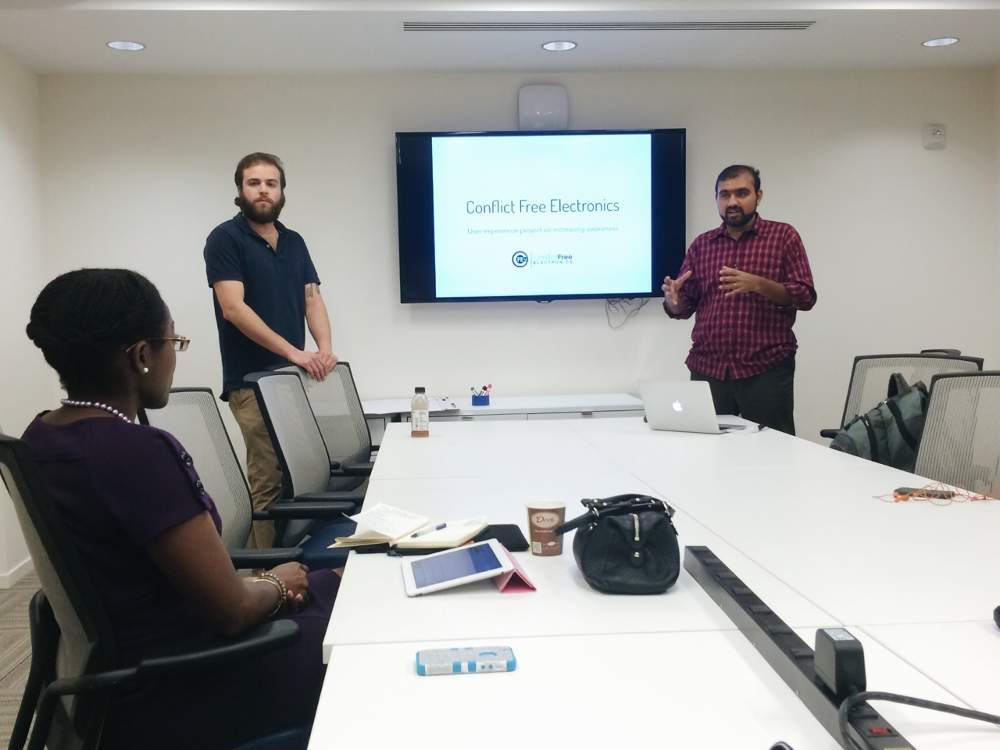To help out with CFE’s funding efforts, I created a video which can communicate the app’s experience in a more compelling manner